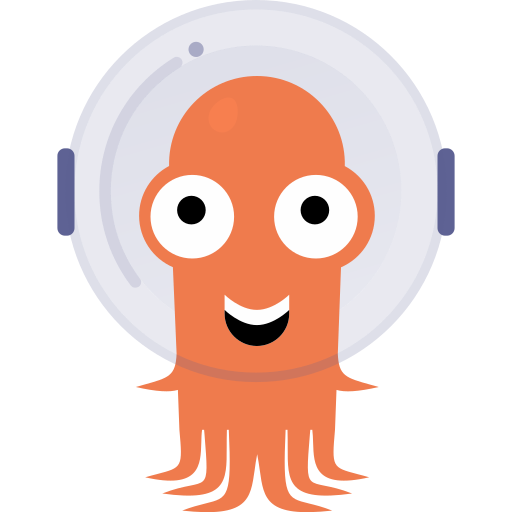

The CI/CD Anti-Pattern: Pipelines Running The World
The CI/CD Anti-Pattern: Pipelines Are Not Platforms
Pipelines are excellent for compiling code and producing deployable artefacts. They are designed for deterministic, one-time execution where a defined sequence of steps produces a predictable output.
However infrastructure and platform resources are fundamentally different: they require continuous reconciliation, lifecycle management, and drift correction.
For this reason, pipelines should remain focused on build and packaging tasks.
The CI/CD Anti-Pattern: Pipelines Are Not Platforms
Universal Control Plane Powered by K8s

Universal Kubernetes Control Plane
MANAGED RESSOURCES (MR)
Crossplane extends Kubernetes management capabilities through providers that offer a controller and a set of Custom Resource Definitions (CRDs), mapping each API object of an external system as a Kubernetes resource.
---
apiVersion: ec2.aws.upbound.io/v1beta1
kind: VPC
metadata:
name: example-vpc
spec:
forProvider:
region: eu-central-1
enableDnsHostNames: true
enableDnsSupport: true
cidrBlock: 10.40.0.0/16EXPOSURE
ABSTRACTION
ORCHESTRATION
Key Benefits of Adopting a Universal Control Plane
The CI/CD Anti-Pattern: Pipelines Are Not Platforms
The Control Plane Evolution
The Control Plane Evolution
The Control Plane Evolution
The Control Plane Evolution
Simplifying Cross And Multi-cloud Services With Cloud Agnostic Custom Kubernetes Resources
Simplify, Abstract, Deliver
Fusion of K8s and Crossplane
Fusion of K8s and Crossplane
The Anatomy of Crossplane
Crossplane Packages XPKG
The CI/CD Anti-Pattern: Pipelines Running The World
The CI/CD Anti-Pattern: Pipelines Running The World
Unlocking Limitless Potential
Kubernetes provides a programmable control plane for modern infrastructure and platforms. The vast ecosystem captured in the CNCF Landscape demonstrates how the community continuously extends its capabilities. This growth unlocks new possibilities for building flexible and scalable platforms.

Kubernetes Control Plane Bootstrapping The Self-Repairing Frontier
Kubernetes Control Plane Bootstrapping The Self-Repairing Frontier
Kubernetes Control Plane Bootstrapping The Self-Repairing Frontier
01
Backup Slides
02
Backup Slides
Bridging Autonomy and Standardization
Simplify, Abstract, Deliver
IDP Powered by Kubernetes Control Plane
Internal Developer Platform
03